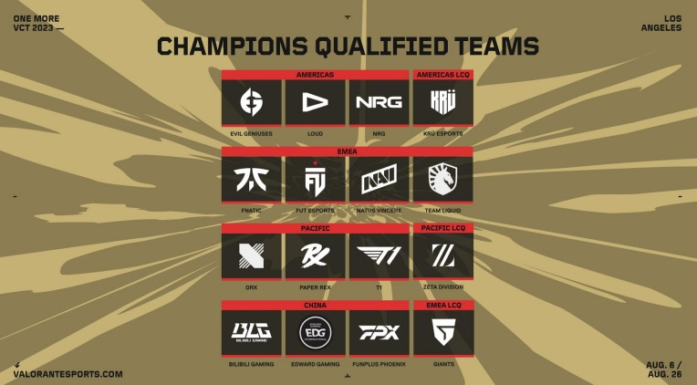

Jadwal (VCT) Valorant Champions 2023, mulai dari tim, group stage, playoff, dan link nonton bisa kamu lihat di sini, untuk dukung tim idolamu ya!
Skema kompetitif Valorant, akhirnya sudah menuju ke liga tertingginya nih. Ya, apalagi sih kalau bukan VCT Champions 2023?
Nantinya, 16 tim dari berbagai dunia bakal memperebutkan gelar juara dunia di turnamen internasional ini. Kira-kira, siapa ya, yang nantinya bakal dinobatkan sebagai juara? Simak saja yuk, informasi mengenai jadwal (VCT) Valorant Champions 2023 secara lengkap di sini!
Turnamen ini bakal dibagi menjadi dua sesi, yaitu Group Stage dan Playoff. Untuk Group Stage sendiri, 16 tim peserta bakal dibagi menjadi empat grup. Mereka nantinya bakal bermain dengan format double elimination (GSL) dengan Best of Three (Bo3). Dua tim yang berada di puncak klasemen grup, bakal lolos ke babak playoff.
Untuk babak playoff sendiri, bakal menggunakan format double elimination bracket. Pertandingannya bakal menggunakan Best of Three (Bo3), pengecualian untuk babak Lower Bracket Final dan Grand Final, yang mana memakai Bo5.
Daftar Tim Peserta VCT Champions 2023

Sebelumnya sudah disebutkan, bahwa ada 16 tim dari berbagai dunia yang mengikuti turnamen bergengsi ini. Adapun daftarnya bisa kamu lihat di bawah.
Evil Geniuses (Americas)
NRG (Americas)
LOUD (Americas)
KRU Esports (Americas)
Fnatic (EMEA)
Team Liquid (EMEA)
FUT Esports (EMEA)
Giants (EMEA)
Paper Rex (Pacific)
DRX (Pacific)
T1 (Pacific)
ZETA Division (Pacific)
EDward Gaming (China)
Bilibili Gaming (China)
FunPlus Phoenix (China)
Natus Vincere (EMEA)
Pembagian Grup
Sebelumnya sudah disebutkan, bahwa 16 tim peserta telah dibagi menjadi empat grup. Adapun detilnya sebagai berikut.
1. Grup A
Paper Rex
KRU Esports
EDward Gaming
Giants
2. Grup B
Evil Geniuses
FunPlus Phoenix
FUT Esports
T1
3. Grup C
Fnatic
ZETA Division
NRG
Bilibili Gaming
4. Grup D
Team Liquid
Natus Vincere
DRX
LOUD
Jadwal (VCT) Valorant Champions 2023 Babak Group Stage
1. Jadwal Valorant Champions 2023 day 1 - Senin, 7 Agustus 2023
02:00 WIB: Team Liquid vs Natus Vincere
05:00 WIB: DRX vs LOUD
2. Jadwal Valorant Champions 2023 day 2 - Selasa, 8 Agustus 2023
02:00 WIB: FUT Esports vs T1
05:00 WIB: Evil Geniuses vs FunPlus Phoenix
08:00 WIB: Natus Vincere vs DRX
3. Jadwal Valorant Champions 2023 day 3 - Rabu, 9 Agustus 2023
02:00 WIB: NRG vs Bilibili Gaming
05:00 WIB: Fnatic vs ZETA Division
08:00 WIB: Evil Geniuses vs FUT Esports
4. Jadwal Valorant Champions 2023 day 4 - Kamis, 10 Agustus 2023
02:00 WIB: Paper Rex vs KRU Esports
05:00 WIB: EDward Gaming vs Giants
08:00 WIB: Fnatic vs Bilibili Gaming
5. Jadwal Valorant Champions 2023 day 5 - Jumat, 11 Agustus 2023
02:00 WIB: Team Liquid vs LOUD
05:00 WIB: FunPlus Phoenix vs T1
08:00 WIB: Paper Rex vs EDward Gaming
6. Jadwal Valorant Champions 2023 day 6 - Sabtu, 12 Agustus 2023
02:00 WIB: KRU Esports vs Giants
05:00 WIB: ZETA Division vs NRG
7. Jadwal Valorant Champions 2023 day 7 - Minggu, 13 Agustus 2023
02:00 WIB: Natus Vincere vs LOUD
05:00 WIB: FUT Esports vs T1
8. Jadwal Valorant Champions 2023 day 8 - Senin, 14 Agustus 2023
02:00 WIB: EDward Gaming vs Giants
05:00 WIB: Bilibili Gaming vs NRG
Jadwal (VCT) Valorant Champions 2023 Babak Playoff
1. Jadwal VCT Champions 2023 day 1 - Kamis, 17 Agustus 2023
02:00 WIB: Fnatic vs LOUD
05:00 WIB: Paper Rex vs FUT Esports
2. Jadwal VCT Champions 2023 day 2 - Jumat, 18 Agustus 2023
02:00 WIB: DRX vs Bilibili Gaming
05:00 WIB: Evil Geniuses vs EDward Gaming
3. Jadwal VCT Champions 2023 day 3 - Sabtu, 19 Agustus 2023
02:00 WIB: Fnatic vs FUT Esports
05:00 WIB: Bilibili Gaming vs EDward Gaming
4. Jadwal VCT Champions 2023 day 4 - Minggu, 20 Agustus 2023
02:00 WIB: LOUD vs Paper Rex
05:00 WIB: DRX vs Evil Geniuses
5. Jadwal VCT Champions 2023 day 5 - Senin, 21 Agustus 2023
02:00 WIB: LOUD vs EDward Gaming
05:00 WIB: DRX vs Fnatic
6. Jadwal VCT Champions 2023 day 6 - Jumat, 25 Agustus 2023
02:00 WIB: Paper Rex vs Evil Geniuses
05:00 WIB: Fnatic vs LOUD
7. Jadwal VCT Champions 2023 day 7 - Sabtu, 26 Agustus 2023
02:00 WIB: Evil Geniuses vs LOUD
8. Jadwal grand final (VCT) Valorant Champions 2023 - Minggu, 27 Agustus 2023